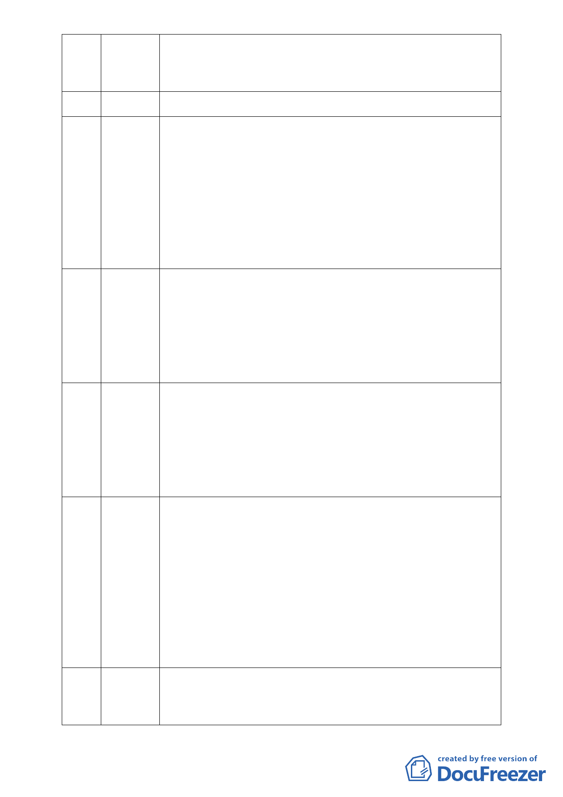

到生態保育，請各位詳細看其規劃設計，連滯洪池的設計亦已達標
準規範的 2.6 倍。比較於美國在臺協會搬遷至內湖，本人更歡迎慈
濟進駐本地。
33 蘇國慎 （離開會場）
34 周漢貽 從比較的角度來看，全國有多少的宗教與慈善團體，如基督教天主
教是否有如慈濟ㄧ樣購買保育地工業地來作宗教活動之用？慈濟所
提計畫也有如企業組織ㄧ般，想為企業謀取最大的利益，即如何把
低價的土地變成高價的土地，及如何把保育地變成建地，如果從陰
謀論視之，剛才所提關渡工業區土地變更時，慈濟也有土地在那裡，
甚且慈濟若於本案變更後藉口未獲內湖居民認同而予以變賣，其中
利益又有多大？可以想像是有巨大的利益在那裡，而法律又是否規
範其變更後建地不能買賣。這就是所謂的猛虎要出閘了。
35 廖信健 提供本區填土前後淹水結果的比較圖與現況圖說給委員參考。主要
訴求：1.呼籲慈濟撤回本案，納入周邊農地共同開發整體規劃設計，
並請都委會委員至現場會勘。2.慈濟應與農民及環保團體協調溝通
尋求圓滿解決之方案，而非ㄧ昧提案枉顧水土保持造成居民生命財
產之損失。3.請發展局重新規劃建立上下游排水系統，讓居民得以
安心生活。
36 黃華德 本人為內科產業發展協會副理事長，內湖的廠商非常關心也感謝慈
濟能到此開發此地為具環保與教育之用，許多前來參訪的國外人士
也多讚許此兼具環保、科技與人文之園區並展現出普世的價值。也
基於對慈濟多年來的信任，廠商對本案表示支持，相信市府也能獲
得驕傲。希望委員能勇於面對壓力並展現魄力，對所期待與所獲得
的共識能予以支持。
37 沈蓉華 慈濟是ㄧ個好的公益團體，弔詭的是其所提保護區開發就可以不顧
生態保育、不顧居民生活上的實際反應？當年明知是保護地為何還
要買？20 年來ㄧ直堅持是表示只要是慈善志業就可以透過大的機制
影響整個視聽？但真理只有ㄧ個就是保護區合不合適開發。政府為
何訂保護區其原則在哪裡，原則變了嗎？請各位想像當年黃大洲先
生在強大壓力下為市民保留住一個可以呼吸的肺，到今天我們仍然
懷念他，內湖居民在此案能否為蒼生保留住一片自然的保護區，請
大家仔細考慮。慈濟若能予以恢復原貌，那才是落實真正的環保政
策。
38 黃以琳 本人 32 歲從小住內湖，記憶中 3 歲時我家淹水到脖子必須游泳才能
回到家，今天只擔心此保護區、地質脆弱的地區，其順向坡是否會
滑動、此滯洪池到底有沒有用，颱風來時是否仍有辦法存活。我只
- 17 -